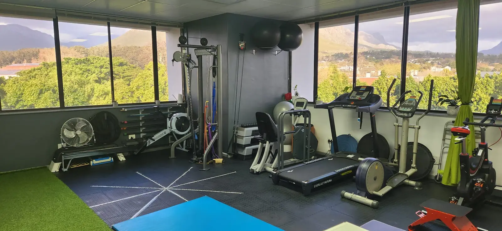

Feel stronger, move easier.
Exercise therapy for pain, recovery, chronic conditions and staying independent as you get older.
Your first visit
Here’s what happens.
How I can help
Can’t get to the studio? I do home visits and online sessions. Vitality assessments too.

Hello, I’m Derryn
I’ve been a biokineticist for 26 years. I work with people of all ages and fitness levels.
BSc Sports Science and Honours in Biokinetics, Stellenbosch University. I also lecture part-time at UWC.
Questions
What does a biokineticist do?
We use exercise as treatment. It helps with recovery after injury or surgery, chronic conditions, and staying strong.
Do I need a doctor’s referral?
No, just book. Some medical aids want one, so check yours.
Will my medical aid pay?
Most schemes do, from day-to-day or savings. Check your plan.
Is there parking and easy access?
[Confirm parking and access at Valerida Centre]
I’m not fit at all. Is that okay?
Yes. We start where you are.
Are you a doctor or physio?
Refer a patient with the form or online. I’ll send you a report.